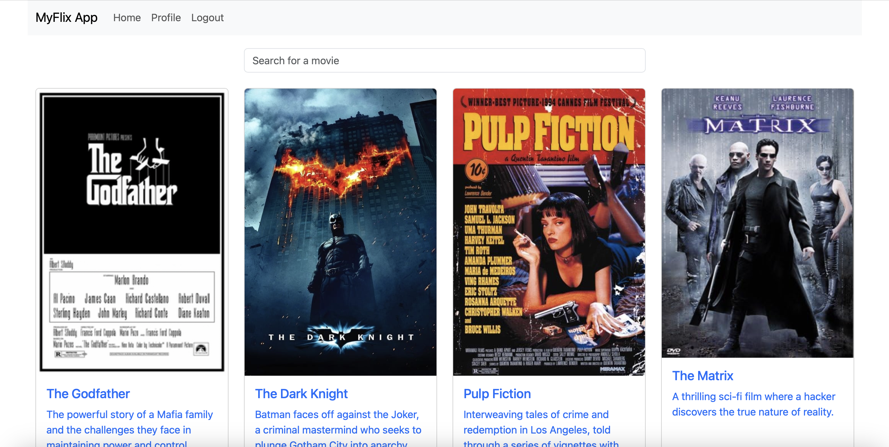

myFlix-client - Project Details
Project Description
myFlix-client is the client-side application of a movie app built using React, Parcel, and Bootstrap. It allows users to explore movies, register, log in, add movies to their list of favorites, and manage profile settings.
Links
Hosted Version: myFlix-client
GitHub Repository: myFlix-client GitHub Repository
Technologies Used
- React: For creating a dynamic and responsive user interface
- Parcel: For fast, zero-config bundling and serving
- Bootstrap: To provide a responsive design layout
- Sass: For enhanced styling and customization
- RESTful API: For managing movie and user data
Key Features
- User Authentication: Enables users to register, log in, and manage their profiles
- Movie Browsing: Displays a list of movies with a detailed view for each movie, including information on genre, director, and actors
- Favorites Management: Allows users to add or remove movies from their favorites list
- Movie Filtering: Users can filter movies by title to easily locate specific movies
Additional Project Materials
- Kanban Board: Used throughout the project to organize tasks, prioritize features, and track progress
- User Stories: Key user stories were created to ensure the app met user needs, including story points for registration, movie browsing, and profile updates
Project Highlights
- Filtering Movies by Title: Provides a quick search feature on the main page to help users find movies by name
- Responsive Design: Utilizes Bootstrap and custom Sass styles to ensure compatibility across different devices
- API Integration: The app communicates with a backend RESTful API to fetch movies, manage user authentication, and update user information
Screenshot
